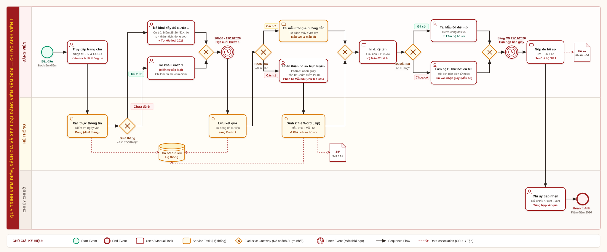

Chi Bộ Sinh Viên 1
Hướng Dẫn Sử Dụng Chi Tiết
Dành Cho Đảng Viên Năm 2026
Tài liệu hướng dẫn từng bước thực hiện kê khai thông tin trực tuyến, tạo hồ sơ kiểm điểm (Mẫu 02c, Mẫu 6b), lấy nhận xét nơi cư trú (Mẫu 6d) và nộp hồ sơ đúng thời hạn quy định.
Sơ đồ quy trình thực hiện

Phần I: Hướng dẫn chi tiết từng bước cho Đảng viên
Bước 1
Mở trang Kê khai
Kê khai thông tin trực tuyến
Important
Hạn cuối hoàn thành Bước 1: Trước 20h00 - Thứ 5, ngày 19/11/2026.
Hãy thực hiện Bước 1 trước để dữ liệu của đồng chí được ghi nhận lên hệ thống Chi bộ và tự động đổ sang Bước 2.
1 Truy cập và tra cứu thông tin
- Tại trang chủ, bấm nút "Thực hiện kê khai ngay".
- Nhập chính xác Mã số sinh viên (MSSV) và Số CCCD, sau đó bấm "Kiểm tra & Tải thông tin".
- Kiểm tra phần Thông tin Đảng viên (Họ tên, Ngày sinh, Ngày vào Đảng, Nhóm, Khoa/Trung tâm, Loại Đảng viên). Nếu thấy sai lệch, báo ngay cho Chi ủy để hiệu chỉnh trong danh sách gốc.
2 Mục 1 — Thông tin sinh hoạt chi bộ nơi cư trú
- Hệ thống sẽ tự động điền sẵn Chi bộ Sinh hoạt nơi cư trú và Nơi ở hiện nay từ dữ liệu hiện có (nếu trước đó đã khai báo).
- Đồng chí cần kiểm tra kỹ lại từng chữ cho đúng với nơi đã đăng ký sinh hoạt theo Giấy 221 / Giấy 213 hiện tại; nếu còn trống hoặc chưa đúng thì gõ sửa lại theo gợi ý ví dụ trên ô nhập liệu.
3 Mục 2 — Kết quả học tập - rèn luyện (Năm học 2025 – 2026)
- Nhập Kết quả học tập (thang điểm 4, ví dụ
3.50) và Kết quả rèn luyện (ví dụ85) cho cả Học kì 1 và Học kì 2 của năm học 2025 – 2026. - Lưu ý riêng đối với Đảng viên Khóa 52K: Nhập số
0vào cả 4 ô kết quả học tập và rèn luyện.
4 Mục 3 — Thành tích và đóng góp
-
Mục 3.1 (Thành tích đã đạt được):
- Chỉ kê khai tối đa 04 loại thành tích cao nhất, nổi bật nhất trong năm học 2025 – 2026 đến thời điểm hiện tại.
- Điền đủ 4 cột (Loại, Đơn vị cấp, Thời gian cấp, Tên thành tích). Nhấn
+ Thêm thành tíchđể thêm dòng; khi đạt tối đa 4/4 dòng, nút thêm sẽ tự ẩn. Nếu không có thành tích, có thể để trống hoàn toàn dòng đầu tiên.
-
Mục 3.2 (Đóng góp cho Chi bộ): Bắt buộc liệt kê tối thiểu 01 hoạt động đã tham gia/đóng góp cho Chi bộ Sinh viên và Chi bộ Sinh viên 1 trong năm học 2025 – 2026 (điền đủ 3 cột: Hoạt động, Thời gian, Các nội dung đã đóng góp). Nhấn
+ Thêm hoạt động đóng gópnếu muốn khai thêm.
5 Mục 4 & Phần III — Đề xuất ý kiến và Tự đánh giá xếp loại năm 2026
- Nhập đề xuất, ý kiến đóng góp xây dựng Chi bộ và Nhà trường (nếu có).
-
Chọn Tự xếp loại mức hoàn thành nhiệm vụ năm 2026 dựa trên kết quả năm học 2025 - 2026:
- Hoàn thành xuất sắc nhiệm vụ: Điểm trung bình học tập năm học 2025 - 2026 đạt từ loại Giỏi trở lên, rèn luyện từ loại Tốt trở lên.
- Hoàn thành tốt nhiệm vụ: Điểm trung bình học tập năm học 2025 - 2026 đạt từ loại Khá trở lên, rèn luyện từ loại Tốt trở lên.
- Trường hợp mới kết nạp: Nếu Đảng viên kết nạp chưa đủ 6 tháng tính đến ngày 21/11/2026 (ngày vào Đảng sau
21/05/2026), hệ thống sẽ tự động hiện cảnh báo và ẩn phần chọn xếp loại (đồng chí chỉ gửi thông tin kê khai và làm bản kiểm điểm hồ sơ). - Tích chọn cam đoan và nhấn "Gửi Thông Tin Kê Khai".
Bước 2
Mở trang Tạo hồ sơ để in
Tạo và tải bộ biểu mẫu để in
Tại trang chủ, trong Phần 2, đồng chí chọn 1 trong 2 cách:
Cách 1 • Khuyên dùng
Điền trực tuyến và xuất 2 file Word cùng lúc
- Bấm nút "Tạo hồ sơ để in" trên trang chủ (hoặc bấm liên kết chuyển tiếp ngay sau khi gửi thành công Bước 1).
- Hệ thống tự nhận diện phiên đăng nhập từ Bước 1 (hoặc đồng chí nhập lại MSSV + CCCD rồi bấm tra cứu). Các thông tin cá nhân, địa chỉ cư trú, điểm số, thành tích, đóng góp và tự xếp loại đã kê khai ở Bước 1 sẽ tự động đổ sang biểu mẫu.
- Phần A — Nội dung tự kiểm điểm (Mẫu 02c): Kiểm tra/bổ sung các mục từ
I.1đếnVI. Có thể bấm nút "Chèn gợi ý" ở đầu mỗi ô để lấy đoạn văn mẫu chuẩn của Chi bộ, sau đó chỉnh sửa lại cho đúng với bản thân. - Phần B — Nội dung tự đánh giá, chấm điểm & xếp loại:
- Bấm "Xem Phụ lục 04 chấm điểm" ở góc phải thẻ để đối chiếu khung tiêu chí chấm điểm đối với Đảng viên là sinh viên (Biểu số 32 Quy định 345-QĐ/TU).
- Nhập
1. Tiêu chí chung(tối đa30điểm) và2. Kết quả thực hiện NV(tối đa70điểm); hệ thống tự cộng tổng điểm/100. - Chọn mức đề xuất xếp loại phù hợp với tổng điểm và điều kiện năm học 2025 - 2026. (Đảng viên kết nạp chưa đủ 6 tháng tính đến 21/11/2026 sẽ được tự động ẩn phần chấm điểm và xếp loại).
- Phần C — Phiếu bổ sung hồ sơ Đảng viên (Mẫu 6b):
- Quy tắc chung: Chỉ điền những mục có thay đổi so với năm trước; các mục không thay đổi giữ nguyên chữ
K. - Lưu ý riêng Khóa 52K: Mục Mới thay đổi nơi ở: nếu đang ở trọ thì ghi rõ địa chỉ trọ hiện nay. Mục Mới thay đổi về nghề nghiệp; đơn vị công tác: ghi
Sinh viên - Khoa [Tên khoa]. - Nhấn vào mục mở rộng "Các mục khác..." nếu có thay đổi về chức vụ, trình độ, khen thưởng từ bằng khen trở lên, kỷ luật, gia đình hoặc kinh tế.
- Quy tắc chung: Chỉ điền những mục có thay đổi so với năm trước; các mục không thay đổi giữ nguyên chữ
- Xuất file & In ký tên: Bấm nút "Xuất tệp ZIP hồ sơ để in (Mẫu 02c + Mẫu 6b)". Giải nén file
.zipvừa tải về, mở kiểm tra lại 2 file Word (Mẫu 02c và Mẫu 6b), in ra giấy A4 và ký ghi rõ họ tên.
Cách 2 • Ghi tay / Tự soạn
Tải mẫu trống về viết tay hoặc tự soạn
- Trên trang chủ, bấm "Tải mẫu trống" để tải bộ biểu mẫu gốc và bấm "Xem hướng dẫn ghi" để đọc quy cách viết tay/đánh máy đúng chuẩn Chi bộ.
Bước 3
Chuẩn bị Mẫu 6d (Nhận xét nơi cư trú) & Nộp hồ sơ
1 Lấy Mẫu 6d (Nhận xét nơi cư trú)
- Bản online (ưu tiên): Truy cập Cổng Dịch vụ công Đảng tại dichvucong.dcs.vn → Đăng nhập → Chọn Thủ tục hành chính của tôi → Bấm vào dòng Lấy ý kiến nhận xét của Chi ủy chi bộ đối với đảng viên sinh hoạt nơi cư trú → Chi tiết giấy tờ → Bấm biểu tượng tải xuống và in ra.
-
Nếu chưa có bản điện tử: Phải liên hệ ngay Bí thư Chi bộ nơi cư trú để xử lý kịp thời theo 3 trường hợp:
- Trường hợp 1: Chi bộ nơi cư trú báo sẽ làm bản điện tử → hỏi rõ thời điểm trả kết quả để kịp tải và nộp trong tuần.
- Trường hợp 2: Chi bộ nơi cư trú báo làm bản giấy theo mẫu 2-QĐ 221 → tải ngay mẫu giấy 6d tại đây, điền thông tin và xin ký xác nhận/đóng dấu.
- Trường hợp 3: Chưa nộp Giấy 221 và chưa có bản điện tử → khẩn trương liên hệ Bí thư Chi bộ nơi cư trú để xin sinh hoạt 221 trước và nhờ cấp nhận xét kịp tiến độ.
Kiểm tra đủ 3 loại hồ sơ bản giấy trước khi nộp vào Sáng Chủ nhật, ngày 22/11/2026:
Phần II: Giải đáp thắc mắc thường gặp (FAQ)
1. Nhập MSSV và CCCD nhưng hệ thống báo không tìm thấy?
Kiểm tra lại có gõ dư khoảng trắng hoặc nhầm số CCCD/mã giảng viên (VD:
GVSV1) hay không. Nếu vẫn không tra cứu được, liên hệ Chi ủy để kiểm tra và cập nhật vào danh sách trên Cổng Quản trị.
2. Đã gửi Bước 1 nhưng muốn sửa lại thông tin thì làm sao?
Truy cập lại mục Thực hiện kê khai ngay, nhập lại đúng MSSV và CCCD. Hệ thống sẽ tự động tải lại toàn bộ nội dung đã gửi trước đó để đồng chí chỉnh sửa và bấm "Cập Nhật Thông Tin Bổ Sung" (lưu ý: hoàn tất trước 20h00 - Thứ 5, ngày 19/11/2026).
3. Tại sao nút + Thêm thành tích biến mất sau khi thêm 4 dòng?
Theo quy định của Chi bộ, mục
3.1 chỉ kê khai tối đa 04 thành tích cao nhất, nổi bật nhất. Khi đã đủ 4 dòng, hệ thống ẩn nút thêm; nếu muốn thay thành tích khác, đồng chí sửa trực tiếp trên 4 dòng hiện có hoặc bấm × xóa bớt dòng không cần thiết.
4. Nên mở file .zip xuất ra từ Bước 2 trên thiết bị nào?
Khuyên dùng máy tính (Windows/macOS) để bấm "Xuất tệp ZIP hồ sơ để in (Mẫu 02c + Mẫu 6b)", sau đó giải nén file
.zip bằng File Explorer / WinRAR / 7-Zip để mở bằng Microsoft Word kiểm tra bố cục trước khi in.